Mango (Mangifera indica L.)
Anacardiaceae
Varieties
Neelum, Bangalora, Alphonso, Rumani, Banganapalli, Kalepad, Peter, PKM 1, PKM 2, Sendura, Jahangir, Mulgoa, Himayuddin, Paiyur 1, Mallika, Amrapali and Salem Bangalora, Arka Anmol, Arka Aruna, Arka Neelkiran, Arka Puneeth and Sindhu are popular varieties in mango.
Varieties suiable for Tamil Nadu
Banganapalli, Bangalora, Neelum, Rumani, Mulgoa, Alphonso, Senthura, Kalepad, Imam Pasand.
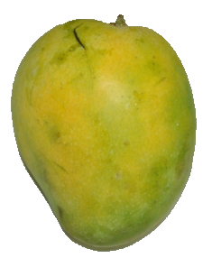 |
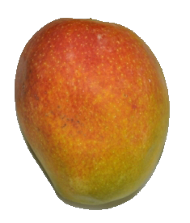 |
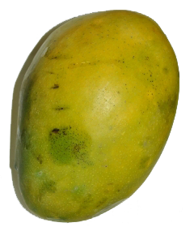 |
| Banganapalli |
Senthura |
Imam Pasand |
Processing varieties : Alphonso,Banganapalli,Totapuri
Export varieties : Alphonso,Banganapalli,Sendura
|
Soil and climate
Ideal soil for mango is red loamy. Good drainage is preferable for better establishment. Ideal pH range is from 6.5 to 8.0.
Season of planting
Planting spreads from July to December.
Planting material
Approach and epicotyl grafts are used for planting.
|
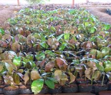 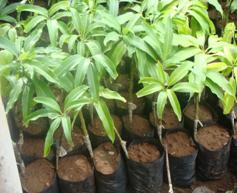
Mango seedlings used for approach / epicotyl grafting
|
Approach and epicotyl grafting videos
Field preparation
Dig pits of 1 m x 1 m x 1 m. Fill in with topsoil mixed with 10 kg of FYM and 100 g per pit.
Spacing
Adopt any one of the following spacing depending on requirements.
- Under conventional system of planting: 7-10 m either way
- High Density Planting : 5m x 5 m (400 plants /ha)
- Double hedge row system : Adopt a spacing of 5m x 5m within double rows and 10m between sucessive double rows (266 plants/ha)
Planting
Grafts are planted in the centre of pit with ball of earth intact followed by watering and staking. The graft union must be 15 cm above the ground level.
Irrigation
Regular watering is recommended till establishment. Under conventional irrigation systems, weekly irrigation is essential. However, under micro-irrigation the requirement is restricted to one-third of the water required for conventional method.
Intercropping
Short duration crops like legumes, vegetables, groundnut etc. can be raised during pre- bearing age.
Manures and fertilizers (Kg per tree)
Manures and Fertilizers |
1st Year |
Annual increase |
6th year onwards |
| FYM |
10.00 |
10.00 |
50 |
| N |
0.20 |
0.20 |
1.0 |
| P |
0.20 |
0.20 |
1.0 |
| K |
0.30 |
0.30 |
1.5 |
|
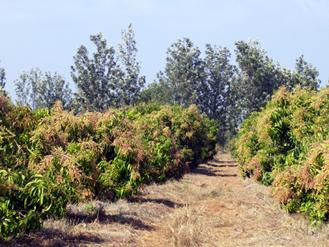
High density planting in mango |
Manures and fertilizers may be applied in September – October. Fertilizers are applied 45 to 90 cm away from the trunk upto the peripheral leaf drip and incorporated.
Fertigation technology under HDP
Apply 1.0:0.5:1.0 kg of NPK / bearing tree / year under HDP through drip fertigation adopting the following schedule:
| Nutrient |
Stage of application * |
Immediately after harvest
(2 months) |
Pre-flowering
(2months) |
Flowering to fruit set
(2 months) |
Fruit development
(4 months) |
Total |
| N |
25 % |
40 % |
20 % |
15 % |
100 % |
| P |
50 % |
30 % |
20 % |
- |
100 % |
| K |
25 % |
20 % |
25 % |
30 % |
100 % |
* At each stage, the above schedule has to be split into six or more doses and applied at
weekly intervals
* Avoid irrigation and fertigation for 30 days for induction of stress before flowering season;
resume as soon as flowering commences.
Canopy management:
Remove root stock sprouts and low lying branches nearer to ground to facilitate easy cultural operations. Remove overlapping, intercrossing, diseased, dried and weak branches in old trees to get good sunlight and aeration. Carry out judicious pruning of the internal branches during August – September, once in three years. Do not allow flowering upto three years by removing the inflorescences as and when they appear. Retain two healthy shoots by trimming away the weak shoots among the crowded terminal shoots during August-September annually. Prune back 20 cm of annual growth of the terminals immediately after harvest.
Top working of senile orchards for rejuvenation:
Use scions of choice varieties like Alphonso and Banganapalli for top working. Behead the trees to be top worked portion during July- August leaving the main trunk at a convenient height and allow for new shoots to develop. Adopt cleft method of grafting or softwood grafting on the emerging shoots on the main stem from the cut end during September- October.
Growth regulators
NAA @ 20 ppm is sprayed at flowering to increase the fruit retention. During February 0.5% Urea (5 g/lit.) or 1% Potassium Nitrate (10g/lit.) may be sprayed to induce flowering, if trees do not flower by that time. Spraying of 2% KNO3 at mustard size will increase the fruit set and retention of fruits.
Application of Paclobutrazol @ 10 g a.i. for non-bearing trees during first fortnight of September will induce flowering and fruitset yield during off years.
Plant Protection
Pests |
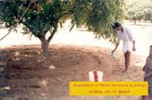 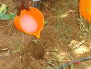
Paclobutrazol application
|
|
Hopper
Spraying two rounds of acephate 75 SP@ 1g/lit or phosalone 35 EC @ 1.5 ml/lit or carbaryl 50 WP 2 g/lit or phosphamidon 40SL 2 ml/lit of water will control hopper. First at the time of panicle emergence and the second two weeks after first spray. Wettable sulphur @ 2 g/lit may be sprayed after spraying carbaryl to avoid mite resurgence. Phosphamidon + neem oil 5 ml/lit of water can be mixed with any insecticides for the control of hopper and shoot webber.
Leaf galls and Aphids
Application of Dimethoate or Methyl demeton @ 2 ml/lit will control the pests.
Flower Webber
|
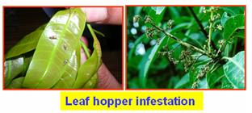
|
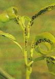
Aphid infestation |
Application of Phosalone 35 EC @ 2 ml/lit will control webber.
Nut Weevil
Fenthion 100 EC 1ml/lit spray during marble stage and second spray 15 days after the first spray will control nut weevil.
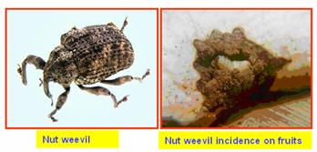
Mealy bug
Spraying of Chlorpyriphos 20 EC 2.5ml/lit or Monocrotophos 36 WSC 1.5ml/lit will give control over the pest. Band the trees with 20 cm wide 400 gauge polythene sheets will prevent the spread of the pest. Similarly, release of Australian ladybird beetle, Cryptolaemus montrouzieri @ 10/tree will be a very effective bio-control measure.
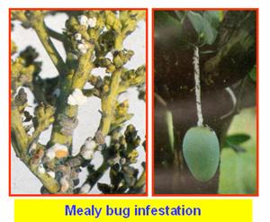
Stem borer
Monocrotophos (36 WSC) 10 ml is soaked in absorbent cotton and placed on the affected stem by removing the bark of 2.5 cm². Then the portion is wrapped with gunny or plastic papers thereby the chemical gets into the system so as to kill the stem borer. The trees should not be treated during their bearing stage. Application of carbofuran 3 G @ 5g per bore hole and plugging with mud after mechanically removing or killing the grub by introducing a needle or wire will also control the pest.
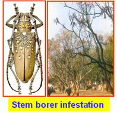
Fruit fly
Spraying of Fenthion 2 ml/lit or malathion 2 ml/lit will control the pest. Ploughing the inter spaces will expose the pupae. Pheromone trap with methyl eugenol 1 ml in 1 litre of water + 1 ml of malathion solution will attract and kill the female insects. Take 10 ml of this mixture per trap and keep them in 25 different places in one hectare between 6 a.m. and 8 a.m. Collect and destroy the fallen fruits.
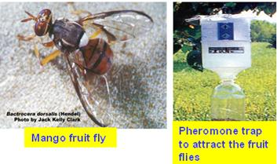
Diseases
Powdery mildew
Application of Sulphur dust (350 mesh) in the early morning will protect new flush or spray Wettable sulphur 0.2% or Tridemorph 0.05% will control powdery mildew.
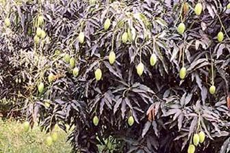
Powdery mildew infestation on leaves
Anthracnose and stalk end-rot
Pre-harvest spraying of Mancozeb 2g/lit or Carbendazim 1g/lit or Thiophanate methyl 1g/lit or Chlorothalonil 2 g/lit, 3 times at 15 days interval will control anthracnose and stalk end-rot.
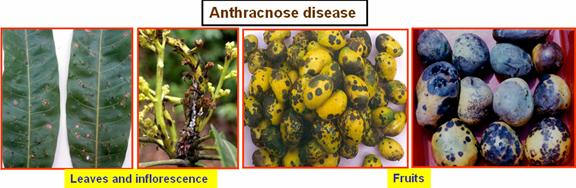
Sooty mould
Spraying Phosphamidon 40 SL @ 2 ml/ litre + Maida 5% (1 kg Maida or starch) boiled with 1 lit of water and diluted to 20 litres will control the incidence of sooty mould. Avoid spraying during cloudy weather.
Mango malformation
- Use of disease free planting material.
- Diseased plants should be destroyed.
- Incidence reduced by spraying 100-200ppm NAA during October.
- Pruning of diseased parts with the basal 15-20 cm apparently healthy portions.
- Followed by the spraying of Carbendazim (0.1%).
|
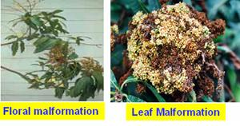 |
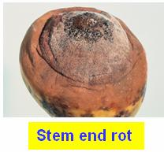 |
Stem end rot
- Dip mangoes in 6 percent borax solution at 43°C for 3 minutes.
- Harvest mangoes on clear dry day.
- Injury should be avoided to fruits at all stages of handling.
- SprayCarbendazim (0.1%) or Chlorothalonil (0.2%) in the field.
|
Red rust
- Bordeaux mixture (1%), or Copper oxychloride 0.25%
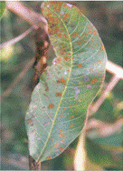
Red rust
Harvest Season
Harvest spreads from March to June.
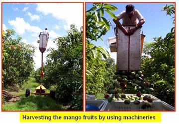
Harvest and yield
Yield varies with varieties and spacing adopted.
8 – 10 t/ha upto 15 years.
15 – 20 t/ha from 15 – 20 years.
Post Harvest treatment
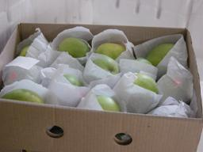
Packing of mango
Dip the fruits in 52 ± 1°C hot water immediately after harvest for 5 minutes followed by 8% plant wax (Fruitox or Waxol) to reduce anthracnose disease in mango during storage. Two pre-harvest sprays of 0.20% Mancozeb (2.0 g/lit) will also reduce the incidence.
Waiting Period
| Dimethoate |
14 days |
| Methyl demeton 0.05% |
14 days |
| Fenthion 0.05% |
14 days |
| Quinalphos 0.05% |
12 days |
Market Information
Growing Districts |
Krishnagiri, Vellore, Dindigul, Thiruvallur, Dharmapuri, Theni |
| Major Markets in Tamil Nadu |
Theni, Dharmapuri, Salem, Tirunelveli. |
| Preferred Varieties and Hybrids |
Banganapalli, Bangalora, Neelum, Rumani, Mulgoa, Alphonso, Totapuri |
| Grade Specification |
Firmness, lack of decay/defects, uniformity of size and shape, skin color, flesh color and flavor
Small - Less than 200 g
Medium- 201-400 g
Large-401-600 g
Extra-large - 601-800 g |
| Export Market |
UAE, Kuwait and other Middle East countries. |
|